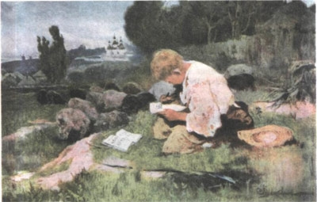
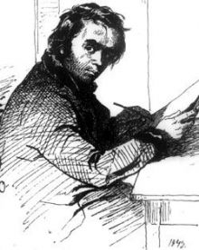
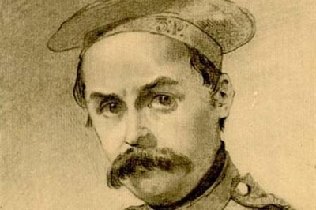

Тарас Шевченко Біографія
Дитинство

Маленький Тарас був народжений у 1814 році, в селі Моринці, що на Черкащині.
Батько – Григорій Іванович Шевченко був кріпосним селянином.
Крім Тараса він мав ще шестеро дітей, двоє синів та чотири дочки.
Роки дитинства Шевченко провів в рідному селі, та селі Кирилівка, яким
володів генерал-лейтенант Василь Енгельгардт.
Вже в дитинстві Тарас Шевченко проявив інтерес та здібності до малювання та поезії.
У восьмирічному віці він вступив на службу до місцевого дяка – вчителя Павла Рубана,
де нишком і навчився грамоті.
В отрочестві його забирають в прислугу поміщика, спочатку кухарчуком, а згодом козачком.
На щастя Тараса, Енгельгардт помітив пристрасть до живопису.
Тож, через бажання мати придворного художника, поміщик відправив юного Шевченка на навчання.
Викладачем Шевченка, на протязі 1,5 року був портретист Ян Рустем, викладач Віленського університету.
Юність

Згодом, у 1831 році генерал-лейтенант Енгельгардт преїхав до Санкт-Петербургу, де навчання Шевченка продовжилось.
В Петербурзі Тарас навчався в цехового майстра мальовничих справ – В.Ширяєва.
Завдяки Ширяєву юний художник відвідував Ермітаж, та малював статуї Літнього саду.
Саме в літньому саду, Шевченко познайомився з Іваном Сошенком, малюючи одну з скульптур.
Завдяки новому знайомому Тарас представили Брюлову та Жуковському, які згодом відіграли значну роль в звільненні Шевченка.
Та, в першу чергу, саме обдарованність цього кріпостного хлопчика була тому причиною.
Ця видатна для Шевченка подія (звільнення з кріпацтва) сталася коли йому було 24 роки.
Завдяки Жуковському та Брюлову, котрі провели благодійний аукціон, була зібрана сумма в 2,5 тисячі рублів.
За ці гроші й було викуплено з кріпацтва Тараса Шевченка майбутнього великого поета.
Одразу після визволення з неволі Тарас Шевченко пішов до Академії мистецтв.
Там, продовживши вивчати живопис, він почав вивчати й твори різноманітних письменників.
Під час навчання було видано першу збірку віршів – «Кобзар».
У 1844 році, закінчивши навчання, майбутній письменник повернувся до України.
В Україні, приїхавши до Києва, він влаштувався на роботу в тимчасову комісію з питань розгляду старих актів, на посаду художника.
Приблизно в той самий час сталося знайомство Шевченка з Костомаровим, що вплинуло на формування його політичних поглядів.
Заслання

В 1846 році, після вступу в Кирило-Мефодіївське братство, Шевченком була написана революційна збірка «3 літа».
Саме за вірші цієї збірки, Тараса заарештували в 1847 році. Згодом його було відправленно в заслання, на службу в Орську Фортецю, де він служив солдатом.
Окремим указом Миколи Першого Тарасу Шевченку було заборонено писати, та малювати. Та, попри указ, поет все одно крадькома писав віршів, та малював.
Так, в 1848 році, Шевченко був включений в експедицію для дослідження Аральского моря в якості художника. Саме там було створено акварельні пейзажі та портрети.
Ще в одній експедиції – в гори Каратау Тарсом було написано декілька повістей
російською (Перу шевченка належать російськомовні Княгиня, Варнак та ін.) та створено декілька картин.
Смерть
10 березня 1861 року Україна втратила одного з найталановитіших своїх синів.
Смерть Тараса Шевченка застала в Петербурзі, далеко від рідної Землі.
Похований був на смоленському кладовищі. Та згодом, як і було вказано нам в заповіті, прах шевченка був перевезений в Україну, на Тарасову гору.
Там, як і просив поет «Було видно, було чути, як реве ревучий».
За своє недовге життя Тарас Шевченко залишив нам велику спадщину в літературі, та художньому мистецтві світу, і просто неоціненний вклад в розвиток української культури.
Перу Тараса Григоровича Шевченка належать:
-поеми,
-балади,
-повісті,
-збірки віршів,
-та більше 1000 картин.
Праці Шавченка перекладені на велику кількість мов всього світу, тож не лишайтеся осторонь і ви. «Учіться, читайте, й чужому навчайтесь, й свого не цурайтесь»
| Назва |
Рік написання |
жанр |
| Причинна |
1837 |
балада |
| Іван Підкова |
1838 |
поема |
| Тарасова ніч |
1838 |
поема |
| Сліпа |
1842 |
поема |